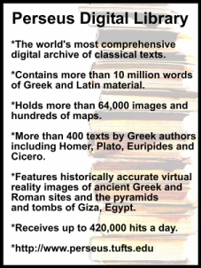

|
MAIN Education Reference
Digital
Scholarship
Online with the Classical Greeks and Romans
Academia is making a radical shift from paper to pixels, says a Tufts professor
who founded an innovative electronic archive.
From emailing
and texting professors to course chatrooms, it’s clear that the online
onslaught is having a growing impact on university life. But the
digital age is not only changing how professors teach – it's
also revolutionizing what constitutes research, who contributes
to history and the number of people who can access information.
According to a Tufts professor and founder of a cutting-edge electronic
archive, the digitization of scholarship will significantly change
the academic world.
“I
think there’s going to be an intense reorganization of scholastic
labor and attention in the next generation,” Gregory Crane,
Tufts professor of classics, told The Chronicle of Higher Education.
“Historians won’t be building their work around the
assumption that paper-based projects are the be-all and end-all.”
Crane heads
the Perseus
Digital Library, the world's largest online database of Latin
and Greek texts and archeological finds – containing 6.5
million words of Greek text, 4 million words of Latin material,
more than 64,000 images and 3-D representations of ancient Greek
and Roman sites. The mission of the Perseus project – which
receives up to 420,000 hits a day from more than 75 countries
-- is to increase accessibility of primary and secondary source-texts,
and bring a wide range of materials to a larger audience.
According
to Crane, projects like these, undertaken by both professors and
non-university affiliated individuals, are likely to reshape the
academic environment.
“[Crane
says] scholarly personal-interest digitizers – and amateurs
who scan material, create Web databases, and compile links to
online resources – may be slowly changing humanities scholarship,”
reported the Chronicle. “By focusing their work on
scanning primary-source documents, such scholars and enthusiasts
are shifting their emphasis in their fields from analyzing documents
to simply making them available.”
According
to the Tufts professor-- who is the U.S. leader of a European
Union/National Science Foundation working group on technology
and the humanities -- the new digitization process calls into
question long-standing tenets of university scholarship.
“When
you’re digitizing you think of yourself as adding value to
publicly accessible material,” Crane told the Chronicle.
“The focus is on the material and not on the monograph.”
This vision
of academics also blurs traditional lines regarding who can contribute
to history, and who can access it.
“It requires
a radical rethinking of history scholarship,” the Tufts professor
told the Chronicle. “There tends to be an ideological
distrust in academia of work that just anybody can understand.”
As Crane told
the Chronicle, he hopes to be part of a scholarly environment
in which digitization projects in the humanities are undertaken
equally by professors, media corporations and “working class
guys, not self-considered intellectuals.”
According
to Crane, Tufts is already contributing to realizing this vision
by encouraging projects such as his.
“Crane
says that deans at Tufts make a point to take esoteric digitization
projects into account when evaluating professors for tenure,”
reported the Chronicle.
Source...
Tufts University Press Release
|